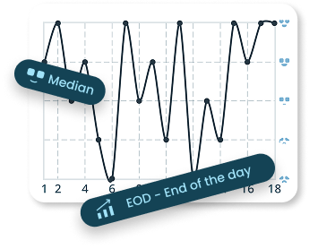
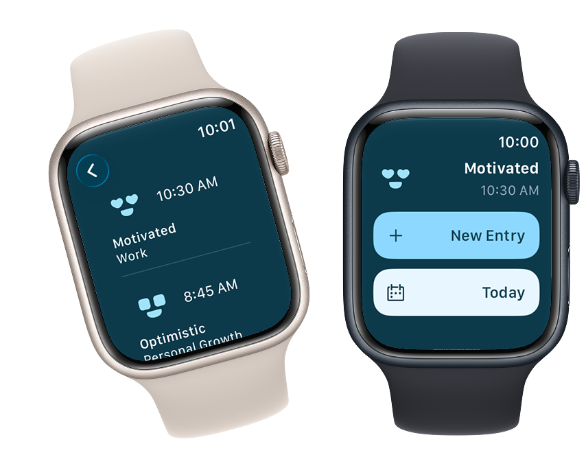
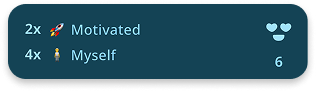
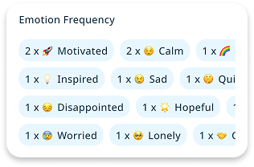
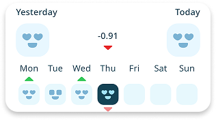
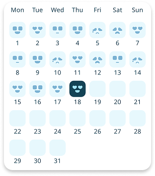

Mood Space
Capture moments
Discover your new self
Capture moments
Discover your new self


Mood space is a diary that helps capture your mood and emotional moments throughout the day and helps visualize in a way that you can get to know about yourself better than ever. Mood Space + An Apple Watch helps you capture every moment in your life without writing down a single word.

Instant Log
Capture every moment in your life without writing down a single word

Know more, See more
Visualize your entries with clear, meaningful charts. This Includes the median & EOD - End of the day basis metrics
Mood O' Count
A clear view of your moods, quantified

Quick Insight
Your Day at a Glance

Most Frequent
Your most frequent triggers, clearly quantified

Emotion Frequency
See how often emotions and their reasons appear over time

Weekly Insight
Understand weekly mood trends using a simple score

Calendar
See how you ended each day